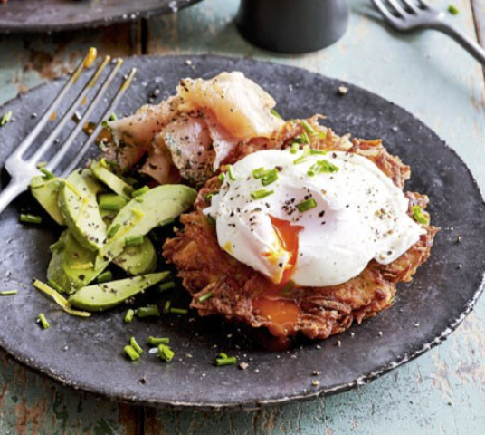
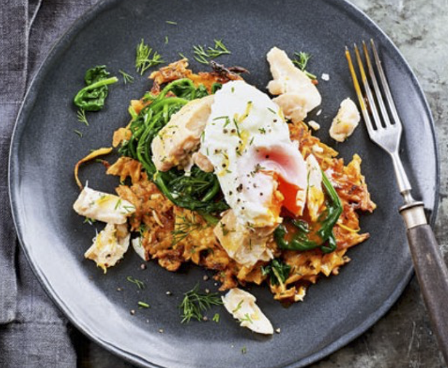

- Avocado
- Food
Horseradish latkes with avocado, gravadlax & poached eggs
Take the classic combination of potato cakes (latkes) and smoked salmon to the next level by adding creamy avocado and poached eggs.
-
PREP TIME
20 minutes -
Cook TIME
20 minutes
Ingredients
- 2 baking potatoes (about 500g), peeled
- 2 tbsp plain flour
- 3 very fresh large eggs
- 2 tsp creamed horseradish
- small bunch chives , snipped
- pinch of white pepper (or to taste)
- 2 tbsp white wine vinegar
- vegetable oil or sunflower oil
- 1ripe avocado
- zest and juice ½ lemon
- 150g gravadlax or smoked salmon
Method
STEP 1:
Grate the potatoes on the coarse side of a box grater straight onto a clean tea towel. Gather the tea towel together and squeeze out as much liquid as you can from the potatoes. Tip the potatoes into a bowl and add the flour, 1 egg, the horseradish and most of the chives (reserve some to serve). Season with salt and white pepper – white pepper is hotter than black, so go easy. Mix well.STEP 2:
Heat the oven to its lowest setting, with a tray on one shelf. Heat the oil in a large frying pan – it should completely cover the base. Have a plate covered with kitchen paper ready. When the oil is hot, spoon mounds of the potato mixture into the pan – they should be about 10cm wide. Press them down with the back of a fish slice and cook for 3-4 mins each side, or until golden brown and crispy, and the potato is cooked through. Transfer them to the kitchen paper to drain off the excess oil, then keep warm on the tray while you continue cooking until all the mixture is used up (make 6 latkes in total).STEP 3:
Heat a large pan of water until bubbles are just breaking the surface but it’s not rapidly boiling, then add the vinegar. Crack an egg into a small bowl, then drop the egg into the pan. Do the same with the remaining egg, cook for 2-3 mins until poached to your liking, then scoop out in the same order you dropped them in and drain on kitchen paper. Halve and stone the avocado, then ease a dessertspoon between the skin and the flesh to remove each half. Slice the avocado, then squeeze over the lemon juice.STEP 4:
To serve, arrange the latkes over two plates, and top with the gravadlax, avocado and poached eggs. Scatter with the remaining chives, the lemon zest and a little black pepper, if you like.

